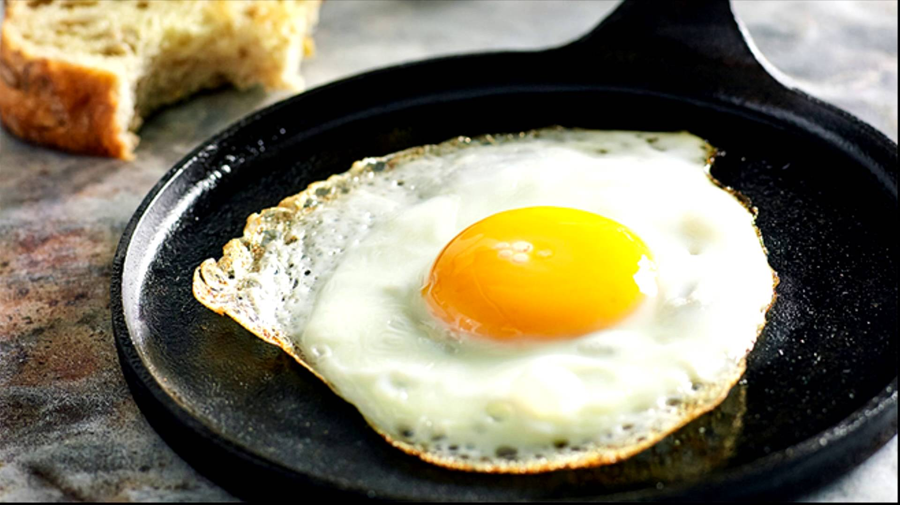

Para quem luta contra a balança e precisa emagrecer ou para aqueles que simplesmente não querem adicionar calorias desnecessárias à dieta para manter o peso ideal, vale a pena saber que um ovo frito apresenta mais calorias do que um ovo cozido.
Ovos fritos ou mexidos são as maneiras menos recomendadas de consumi-los. Isso porque nessas formas de preparo as gorduras naturais são oxidadas, afirmou à BBC Mundo a especialista em nutrição integrativa Rebecca Eisenmann. Além disso, fritá-los em óleo aumenta a quantidade de gordura em 50%, segundo o NHS.
Eu não gosto de ovo frito, o gosto me da anseia de vomito. So de sentir o cheiro ja me embrulha o estomago. Eu não consigo comer se eu colocar na boca eu passos mal.
Alem disso ovo frito e muito calorico e nada saudavel.
| Tabela nutricional | Ovos | Calorias | Quantidade |
|---|---|---|
| Ovo cozido com água | 156 kcal | 100g |
| Ovo frito com óleo | 234 kcal | 100g |